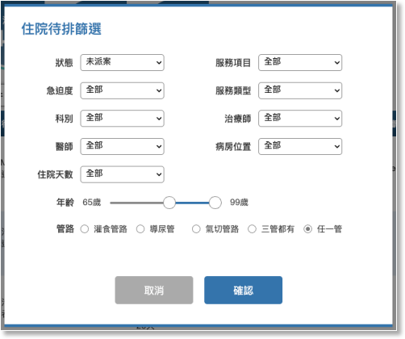

01-2-1 住院待排篩選

項目

內容

說明

狀態
下拉選項預設未派案
下拉選項
- 全部
- 未派案
- 已派案

急迫/嚴重度

下拉選項預設為全部

下拉選項
- 全部
- 紅燈
- 黃燈
- 綠燈
- 灰燈
服務項目
下拉選項預設為全部
待排名單中有主服務的選項
- 全部
- 治療
- 評估
- 檢查
- MBS
- FEES

服務類型

下拉選項預設為全部

下拉選項
- 全部
- 溝通
- 吞嚥
- 溝通＋吞嚥
科別
下拉選項預設為全部
對應待排名單的醫師科別
- 全部
- 科別名稱
治療師
下拉選項預設為全部
下拉選項
- 全部
- 所有語言治療師姓名

醫師

下拉選項預設為全部

對應待排名單的醫師
- 全部
- 醫師代碼及姓名
病房位置
下拉選項預設為全部
下拉選項
- 全部
- 院內護理站代號，例如5A、5B

住院天數

下拉選項預設為全部

下拉選項
- 全部
- 1～7
- 8～14
- 15～30
- 31～90
- 91～180
- 181～360
- 360以上

年齡

雙節點滑桿元件
RangeSlider

左右點的控制連動年齡起迄的數字，預設0～125
管路
單選項預設以上三管都有
radio button
1. 管路項目：
- 灌食管路
- 導尿路
- 氣切管路
- 以上三管都有
- 任一管
2. 管路分類：
- 灌食管路:
- NG-Rubber(鼻胃管)
- Gastrostomy tube (胃造口管)
- Jejunostomy tube (空腸造口管)
- ND (鼻、十二指腸導管)
- 導尿管:
- Foley-Rubber (導尿管)
- Cystofix(膀胱造口管)
- 氣切管路:
- Tracheostomy(氣管造口器)
- Endotracheal (氣管內管)
